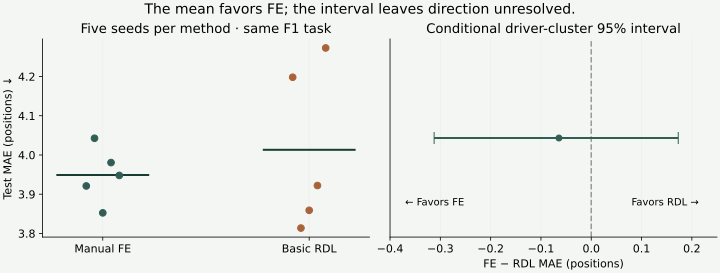
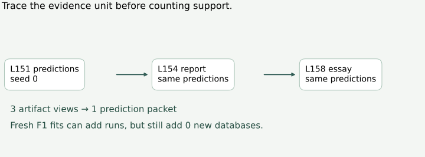

Year 4 · Quarter 4 · Lesson 158
Year 4 synthesis: a verdict that could change
1 · Turn a portfolio into an argument¶
Reading route. Separate the thesis questions → read the matched result → trace evidence reuse → state counter-evidence → propose a falsifier.
Your win: write a defensible interim verdict on the mission: does learning directly from relational structure deliver value beyond manual feature engineering? Spend about 20 minutes on this lesson, then 45–60 minutes on the replay and a 700–1,000-word essay. The essay is your work; the executed solution is author evidence.
L154 assembled results. L155 added a matched FE comparison. L156 separated timestamp filtering from historical availability. L157 packaged a contribution. A reviewable package now lets us ask a harder question: what should a skeptical reader believe after seeing it? More artifact checks do not automatically strengthen the broad thesis.
Recall the earlier weakness work in L137 and L149: a proposed explanation must survive a held-out check. Those lessons are conceptual callbacks here, not extra numerical samples in this report. The planned graph-construction Lesson 157b is absent; we cannot use its planned experiment as evidence. This lesson introduces no new architecture.
Prerequisites in one sentence each: a query is (entity, cutoff); validation selects the recipe/checkpoint; test evaluates the frozen choice; MAE is lower-is-better; training-seed SD is not uncertainty across databases.
2 · Separate four questions before drafting¶
| Question | Evidence needed | Current local boundary |
|---|---|---|
| Does the pipeline run reproducibly? | Pinned inputs, complete runs, rescored predictions | Selected saved-prediction replay passes |
| Does RDL predict better than FE? | Matched task, information, evaluation and comparison budget | One matched F1 task; no decisive advantage |
| Does it save human effort? | Prospectively recorded comparable human work | NOT_OBSERVED |
| Does this establish broad undervaluation? | Generalization plus evidence about value and adoption | Research hypothesis; no market/adoption study |
The primary reading is RelBench v1, Section 6 and Appendix C. It reports a study of predictive quality and human work. Treat that as published evidence, with the paper's own scope. Our selected replay does not recreate that human study. Its basic regression GNN also differs from the boosted regression comparison; the L155 protocol records the distinction.
A good synthesis does not make the strongest sentence it can phrase. It makes the strongest sentence its evidence can support, then says which experiment would change it.
3 · Work through one measured claim¶
| Evidence | Measured result | Permitted interpretation |
|---|---|---|
| L151 classification | 69.2588% AUROC | Execution evidence; fresh FE missing |
| L152 regression | 3.970840 MAE | Execution evidence; use L155 for matched FE |
| L153 recommendation | Test NOT_RUN | INCOMPLETE; validation pilot cannot fill test |
| L155 matched F1 | FE 3.948917; RDL 4.013141 MAE | Point estimate favors FE |
| L155 benefit FE − RDL | -0.064225; conditional 95% [-0.312329, +0.172961] | Neither superiority nor equivalence established |
| Human effort | NOT_OBSERVED | No local effort-saving ratio |
| L156 released → fixed horizon | 4.128265 → 4.200381 MAE | Policy verdict FAIL → NOT_ESTABLISHED; no leak-free sign-off |
| L157 released → fixed horizon | 4.015191 → 4.073480 MAE | Policy verdict FAIL → NOT_ESTABLISHED; no leak-free sign-off |
The F1 comparison uses the same held-out query population and five complete runs per method. A positive benefit means RDL has lower error:
benefit = FE MAE − RDL MAE ≈ 3.948917 − 4.013141 ≈ −0.064225 positions.
The benefit is computed from unrounded scores. Subtracting the two displayed six-decimal means gives −0.064224; the last-digit difference is rounding.
That point estimate favors FE. The 95% driver-cluster bootstrap interval is approximately [−0.3123, +0.1730]. It keeps a driver's cutoff queries together and is conditional on the already fitted models and this split. It does not cover new databases, all training randomness, or shared race/time dependence. An interval spanning zero does not prove the methods equivalent. See the replayed evidence and L155 uncertainty protocol.

Worked rewrite. “RDL beats feature engineering” becomes: “On our one matched F1 task, FE had lower mean test MAE by 0.0642 positions; the conditional interval did not resolve a consistent direction. This result does not establish a portfolio-wide RDL advantage.” The revised sentence names the population, magnitude, uncertainty and scope.
Lab task — claim_verdict. Map a requested claim to the evidence it requires. The function is a guard against overclaiming, not an essay grader or a significance test. Your actual essay still needs reasoning.
4 · Do not count a report as another experiment¶
Follow this chain: L151 seed-0 predictions → L154 portfolio report → L158 essay. These are three artifacts describing one prediction packet. Now contrast L155, L156 and L157: fresh predictions can differ, yet all concern the same F1 task and database. Distinct bytes are not proof of independent scientific replications or new-domain coverage.

Lab task — evidence_coverage. Count completed test tasks and databases once; group identical prediction hashes. Reject duplicate evidence IDs and validation pilots passed off as test entries. The report includes an explicit alias for the L154 view of L151 seed 0 so that you can see reuse rather than merely read a warning.
The completed portfolio covers two tasks on two databases, with one matched FE task. Recommendation remains incomplete. The 98,918 rescored rows include repeated evaluation populations, multiple seeds and a validation pilot; they are not 98,918 independent tests of the thesis. Never average AUROC, MAE and MAP into a headline score.
5 · A validity correction answers a different question¶
L156's released/fixed-horizon test means are 4.128265 / 4.200381 MAE; L157's are 4.015191 / 4.073480. These are separate execution cohorts, not four interchangeable methods to rank by the best test number. Each fixed-horizon intervention changes dated preprocessing to respect the declared 2005 fitting boundary.
The inherited policy verdict changes from FAIL for released preprocessing under that strict policy to NOT_ESTABLISHED after correction. Missing historical arrival information prevents a leak-free sign-off. A score can worsen while a declared policy is better respected. Neither observation explains every cause of performance. Source nonfinite-gradient observations also remain unresolved; reproducing a score does not certify healthy optimization. L156 evidence · L157 evidence.
L158 freshly checks prediction metrics, keys and checkpoint selection. It inherits, rather than re-executes, the pinned SQL, sampling, gradient and availability audits. The manifest names those files. Hashes demonstrate unchanged captured bytes, not the correctness of every upstream judgment or historical identity.
6 · Reproduce every numerical premise used here¶
Named experiment: L158 Year 4 thesis evidence replay. Full selected scope: classification reference and selected lanes, regression, recommendation validation pilot, the matched FE/GNN comparison, and both temporal-policy lanes in L156 and L157. No test missingness is replaced with a pilot score. The selected classification lane remains separate from the reference lane.
Executed author evidence: 98,918 rows rescored, 45 validation-selection checks and 220 frozen inputs. No fresh training. These counts describe audit work, not independent scientific replications.
# From relational/. CPU only; no downloads, fitting or cloud dispatch.
.venv/bin/python labs/_replay_l158.py
.venv/bin/python labs/_verify_l158.py
The verifier uses independent sklearn metric calculations and a separate bootstrap implementation. Complete (entity, cutoff) alignment includes explicit seconds-to-nanoseconds conversion for temporal-label packets. Checkpoint selection is validated against saved validation histories. Fresh training commands and their original boundaries remain in L151, L152, L153, L155, L156 and L157.
Budget: USD0 new cloud spend; no fresh training. This is full replay of the declared evidence set, not whole-paper reproduction. The recommendation run remains INCOMPLETE; the original human study remains NOT_RUN. The local contribution remains PENDING_PUBLICATION.
7 · Write a claim that could lose¶
Lab task — validate_falsifier. Specify the task, comparator, information policy, metric direction, minimum useful benefit, validation selection rule and test decision rule. A complete form is only SPECIFIED_NOT_EXECUTED, not a well-powered research design by itself.
Illustrative future test, not an executed result: on a predeclared task from a new held-out database, compare RDL against SQL features plus LightGBM under the same information boundary. Choose a useful benefit threshold before test access; for a finishing-position task, 0.1 MAE could be a planning example, not a universal threshold. Freeze model selection on validation. An upper benefit-interval bound below that threshold would disconfirm the claim of a benefit at least that large. Specify budget fairness, seeds, cluster unit and interval method before running. Measure human effort separately and prospectively; a runtime timer cannot substitute for it.
The missing graph-construction experiment is another possible follow-up, but do not presume its result. L159's foundation-model preview will introduce a new research direction; this essay must not borrow that future promise as present evidence.
8 · Your synthesis essay¶
Use the essay template and the student notebook. The executed author solution demonstrates the audit, not your mastery.
- Verdict: one bounded paragraph defining which part of the thesis you are testing.
- Evidence for: distinguish published support from locally reproduced execution; cite exact artifacts.
- Evidence against or unresolved: use the matched F1 result, missing effort observations and incomplete recommendation entry.
- Validity and dependence: explain the temporal audit and why repeated seeds/reports add no new database.
- Falsifier: propose the next experiment and the result that would change your mind.
Score 0–2 on each of five axes: numerical/provenance accuracy, comparator fairness, uncertainty/dependence, counter-evidence, and an operational falsifier. A review target is 8/10 with no zero. Automated checks cannot grade your reasoning; send the essay to the teaching agent for feedback. Learner status remains PENDING_WRITTEN_DEFENSE.
Spaced retrieval: tomorrow, reconstruct the four-question table without opening this page. In a week, rewrite an unsupported “RDL wins and saves time” claim using only the evidence you can recall, then check the report. Ask the teaching agent about anything unclear and bring your written defense for review.